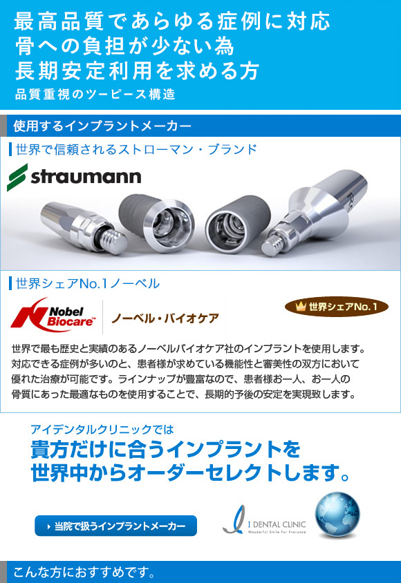

インプラントならアイデンタルクリニック トップページ > 料金について > ストローマン・ノーベル詳細



- 被せものの土台となるアバットメントをオーダーメイドでカスタマイズ出来るので審美性を要求する前歯のインプラント手術に適しております。
- インプラント体が顎の骨に結合するまでの期間を安静に保つことができ、細菌に感染するリスクも低くなるので、骨が薄いケースの時には確実性が高い方法です。
- 被せものを取り外す事の出来るスクリュー固定方式が出来るメリットもあります。

- 長期間安定するインプラントをお求めの方
- 骨が薄い または、柔らかい方
- 前歯の審美的要求をお求めの方
- 長期保証をお求めの方

世界シェアNo.1であるストローマン社のインプラントか、世界で最も歴史と実績のあるノーベルバイオケア社のインプラントを使用します。
ストローマンインプラントは埋入後の長期にわたる安定性が多くの研究により報告されており、世界７０ヶ国以上に歯科用インプラントを提供しています。様々な症状の患者様に合わせた豊富なラインナップを有し、新製品であるSLActiveは、短期間での治療の完了と、早期の安定性に優れたインプラントです。
ストローマンインプラントに関する10年間の研究報告*1
■さまざまな部位に用いられた511本のインプラントの高い成功率、生存率を示しています。*2
■低いインプラント周囲炎発生率が報告されています。*2
ノーベルインプラントは、対応できる症例が多いのと、患者様が求めている機能性 と審美性の双方において優れた治療が可能です。ラインナップが豊富なので、患者様お一人、お一人の骨質にあった最適なものを使用することで、長期的予後の安定を実現致します。
本社：スィスチューリッヒ
営業拠点：37カ国に営業拠点を持ち、世界の70カ国以上にて販売
製造拠点：日本を含む6ヶ所(スウェーデン、アメリカ、イスラエル)
従業員数：Globalで2,500名以上
スイスの証券取引所に上場
用語解説
成功率 ： インプラントとして一定の機能(噛む、見た目など)を果たしているかを示す値
生存率 ： お口の中にインプラントが残っているかを示す値
インプラント周囲炎 ： 天然歯における周囲炎と同様に、プラークによる周囲炎が原因でおこるインプラント周囲組織の慢性感染症